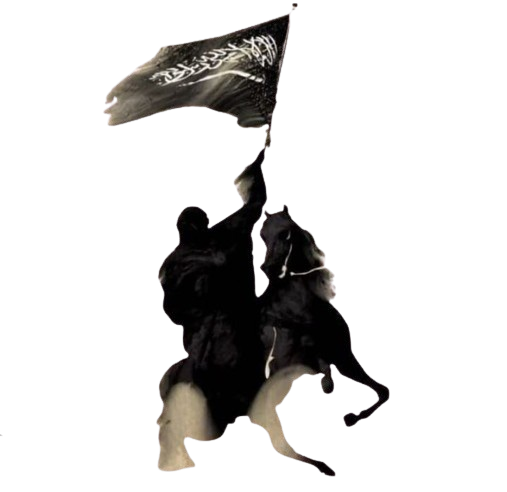

صحابہ کی فہرست
آمنہ بنت وہب
آنسہ
رضي الله عنه
امامہ بنت زینب
ابان بن سعید بن العاص
ابراہیم بن محمد
ابن ام مکتوم
ابوالعاص
ابو العاص بن ربیع
ابو الہیثم بن تیہان
ابو امیہ مخزومی
ابو العلاء حضرمی
ابو ایمن
ابوایوب انصاری
ابوبکر صدیق
ابوجندل
ابو حذیفہ
ابو دجانہ
ابودرداء
ابوذر غفاری
ابو رافع
ابوسبرہ بن ابو رہم
ابوسفیان بن حارث
ابو سفیان بن حرب
ابو سلمہ
ابوسفیان بن حارث
ابو سفیان بن حرب
ابو صرمہ انصاری
ابو الضیاح انصاری
ابوطلحہ انصاری
ابوعبیدہ ابن جراح
ابو عیسی حارثی
ابو فضالہ انصاری
ابو فکیہ
ابو قتادہ انصاری
ابوقیس حرمہ
ابو کبشہ
ابو لبابہ
ابو محجن ثقفی
ابو محذورہ
ابو ملیل انصاری
ابوموسٰی اشعری
ابوہریرہ
ابی بن ثابت
ابی بن کعب
ابی بن معاذ بن انس
احنف بن قیس
اسامہ بن زید
اسعد بن زرارہ
اسود بن سریع
اسیرہ بن عمرو
ام البنین
ام ایمن
ام حکیم
ام رومان
ام سلیم
ام شریک
ام عبیس
ام عمارہ
ام کلثوم بنت عاصم
ام کلثوم بنت محمد
ام کلثوم بنت عقبہ
احنف بن قیس
اخنس بن حبیب
ارقم بن ابی الارقم
اسعد بن یزید
اسماء بنت ابی بکر
اسماء بنت عمیس
اسید بن حضیر
امرؤ القیس بن عابس
انس بن مالک
انس بن معاذ
انیس بن قتادہ
النہدیہ
اوس بن خولی
اوس بن ثابت
اوس بن صامت
اوس بن معاذ
ایاس بن ابی البکیر
ایمن بن خریم
براء بن عازب
براء بن مالک انصاری
بریدہ بن حصیب
بجير بن ابی بجير
بشر بن البراء
بشیر بن سعد ابو النعمان ابن ثعلبہ الانصاری الخزرجی
بلال بن حارث
بلال ابن رباح
بلال بن یحیى
تمیم بن الحمام
تمیم بن اوس داری
تمیم ربیعہ
تمیم مولی خراش
تمیم بن زید
ثابت بن اقرم
ثابت بن الجذع
ثابت بن خالد
ثابت بن دحداح
ثابت بن ضحاک
ثابت بن عبید
ثابت بن عمرو انصاری
ثابت بن قیس
ثابت بن المنذر
ثابت بن ہزال
ثعلبہ بن الحارث
ثعلبہ بن حاطب
ثعلبہ بن سعد
ثعلبہ بن عمرو بن محصن
ثعلبہ بن عنمہ
ثقف بن عمرو
ثمامہ بن اثال
ثمامہ بن عدی
ثویبہ
ثوبان بن بجدد
جابر بن عبداللہ
جابر بن عبداللہ بن رئاب
جبار بن صخر
جبیر بن ایاس
جبیر بن مطعم
جریر بن عبداللہ البجلی
جعفر ابن ابی طالب
جلیبیب
حارث بن ابی ہالہ
حارث بن انس بن مالک
حارث بن اوس بن معاذ
حارث بن خالد
حارث بن خزمہ
حارث بن عبد العزی
حارث بن عمیر
حارث بن عبدالمطلب
حارث بن قیس بن خلدہ
حارث بن مالک
حارث بن معاذ
حارث بن ہشام بن مغیرہ
حارثہ بن زید انصاری
حارثہ بن سراقہ
حاطب بن ابی بلتعہ
حاطب بن حارث
حاطب بن عمرو
حباب بن منذر
حبیب بن زید
حبیبہ بنت ام حبیبہ
حجر بن عدی
حذیفہ بن یمان
حرام بن ملحان
حرقوص العنبری
حریث بن زید بن عبد ربہ
حزن بن ابی وہب
حسان بن ثابت
حسن ابن علی
حسن بن جابر
حسین ابن علی
حصین بن الحارث
حطاب بن حارث
حفصہ بنت عمر
حکم بن عمیر الثمالی
حکیم بن حزام
حلیمہ سعدیہ
حمنہ بنت جحش
حمزہ بن عبدالمطلب
حنظلہ بن ربیع
خارجہ بن حذافہ سہمی
خارجہ بن حمیر
خارجہ بن زید
خالد بن ابی البکیر
خالد بن سعید
خالد بن عاص
خالد بن عمرو بن عدی
خالد بن قیس
خالد بن قیس بن مالک
خالد بن ولید
خباب بن ارت
خباب مولى عتبہ
خبیب بن اساف
خبیب بن الاسود انصاری
خبیب بن عدی
خداش بن قتادہ
خدیجہ بنت خویلد
خراش بن الصمہ
خرباق ابن ساریہ
خریم بن فاتک
خزیمہ بن اوس
خزیمہ بن ثابت
خلاد بن رافع بن مالک
خلاد بن سوید
خلاد بن عمرو بن الجموح
خلیفہ بن عدی
الخنساء، ارثی العرب
خنیس بن حذافہ
خوات بن جبیر
خولہ بنت حکیم
خولی بن ابی خولی
خویلد بن عمرو السلمی
خیثمہ بن الحارث
دحیہ الکلبی
دعثور بن حارث
ذو البجادین
ذو الشمالين بن عبد عمرو
ذو الخویصرہ یمانی
ذکوان بن عبد قیس
رافع بن خدیج
رافع بن عمیرہ طائی
رافع بن مالک
رافع بن المعلى
ربیعہ بن امیہ
ربیعہ بن کعب
ربيعہ بن حارث
ربیعہ بن اکثم
ربیع بن ایاس
رفاعہ بن رافع
رملہ بنت ابوسفیان
رفیدہ الاسلمیہ
رقیہ بنت محمد
زاهر بن حرام
زبیر ابن العوام
زنیرہ
زیاد بن کعب
زیاد بن ابی سفیان
زیاد بن لبید
زید الخیر
زید ابن الخطاب
زید بن ارقم
زید بن حارثہ
زید بن ثابت
زید بن ثعلبہ
زید بن دثنہ
زید بن سہل
زینب بنت علی
زینب بنت جحش
زینب بنت خزیمہ
زینب بنت محمد
سالم مولی ابی حذیفہ
سالم بن عمير
سائب بن خلاد
سائب بن مظعون
سائب بن عثمان بن مظعون
سبرہ بن فاتک
سبرہ بن معبد
سحبان وائل
سراقہ بن مالک
سعد بن ابی وقاص
سعد بن خولیٰ
سعد بن خیثمہ
سعد بن ربیع
سعد بن زید اشہلی
سعد بن زید زرقی
سعد بن عبادہ
سعد بن عبید
سعد بن مالک
سعد بن معاذ
سعد بن عبادہ
سعید بن جبیر
سعید بن زید
سعید بن عامر
سفیان بن عبداللہ
سکران بن عمرو
سلمہ بن اکوع
سلمہ بنت عمیس
سلمہ ام الخیر
سلمہ بن سلامہ
سلمان فارسی
سلیط بن عمرو
سمرہ بن جندب
سمیہ بنت خباط
سنان بن ابوسنان
سہل بن بیضا
سہل بن سعد
سہل بن حنیف
سہلہ بنت سہیل
سہیل بن بیضا
سہیل بن عمرو
سودہ بنت زمعہ
سیرین زوجہ حسان
سویبط بن سعد
سوید بن مخشی
شجاع بن وہب
شداد بن اوس
شرحبیل بن حسنہ
شقران صالح
شماس بن عثمان
صفوان بن امیہ
صفوان بن بیضاء
صفوان بن معطل
صفیہ بنت حی بن اخطب
صفیہ بنت عبد المطلب
صعصعہ بن صوحان
صعصعہ بن ناجیہ
صہیب الرومی
ضحاک بن حارثہ
ضحاک بن سفیان
ضحاک بن عبد عمرو
ضرار بن ازور
ضماد بن ثعلبہ
طفیل بن حارث
طفیل بن عمرو دوسی
طلحہ بن عبید اللہ
طلحہ بن عتبہ
طلیب بن عمیر
ظہیر بن رافع
عائشہ بنت ابی بکر
عاقل بن ابی البکیر
عاصم بن ثابت
عامر بن ابی البکیر
عامر بن اکوع
عامر بن حارث
عامر بن ربیعہ
ابو فہیرہ
عباد بن بشر
عبادہ بن صامت
عباد بن قيس
عباس بن عبدالمطلب
عیاش بن ابی ربیعہ
عبد الرحمن بن ابی بکر
عبد الرحمن بن جبر
عبدالرحمن بن سمرہ
عبدالرحمن بن عوف
عبد الرحمن بن معاذ بن جبل
عبد اللہ بن ابی اوفی
عبد اللہ بن ابی خولی
عبد الله بن ابی قحافہ
عبد اللہ بن ارقم
عبد اللہ بن انیس
عبد اللہ بن جبیر
عبد اللہ بن جحش
عبد اللہ بن جعفر
عبد اللہ بن حارث
عبد اللہ بن حذافہ سہمی
عبد اللہ بن حمیر
عبد اللہ بن رواحہ
عبد اللہ ابن زبیر
عبد اللہ بن سراقہ
عبد اللہ بن سعید
عبد اللہ بن سلام
عبد اللہ بن سلمہ
عبد اللہ بن سہل
عبد اللہ بن سہیل
عبد اللہ بن طارق
عبد اللہ بن عبد اللہ بن ابی
عبد اللہ بن عمر
عبد الله بن مغفل
عبد الله بن مخرمہ
عبد اللہ بن مسعود
عبد اللہ بن مظعون
عبد اللہ بن عباس
عبد اللہ بن عبداللہ بن ابی
عبد اللہ بن عمر
عبد الله بن عمرو بن حرام
عبد اللہ بن عمرو بن العاص
عبد اللہ ابن زبیر
عبیدہ ابن حارث
عبید بن اوس
عبدیا لیل بن ناشب
عتاب بن اسید
عتبہ بن غزوان
عتبان بن مالك
عثمان بن حنیف
عثمان بن عامر
عثمان بن عفان
عثمان بن مظعون
عثمان ابو قحافہ
عدی بن حاتم
عدی بن ابو الزغباء
عروہ بارقی
عروہ بن مسعود
عروہ بن زبیر
عصمہ بن وبرہ
عکاشہ بن محصن
عکرمہ بن عمرو
عقبہ بن عامر
عقبہ بن وہب
عقیل ابن ابی طالب
علی بن ابی طالب
عمار بن یاسر
عمارہ بن حزم
عمران بن حصین
عمرو بن ابی عمرو
عمرو بن ایاس
عمر بن خطاب
عمرو ابن العاص
عمرو بن الجموح
عمرو بن حارثہ
عمرو بن حمق
عمرو بن سراقہ
عمیر بن ابی وقاص
عمير بن الحمام
عمیر بن رئاب
عمیر بن سعد
عمیر بن وہب
عمیر بن عوف
عوف بن الحارث
عویم بن ساعدہ
عیاش بن ابی ربیعہ
عیاض بن زہیر
غضیف بن حارث
غیلان بن سلمہ
فاطمۃ الزھراء
فاطمہ بنت خطاب
فاطمہ بنت الاسود
فاطمہ بنت الولید بن عبد شمس
فاطمہ بنت الولید بن المغیرہ
فاطمہ بنت الزبیر
فاطمہ بنت اسد
فراس بن نضر
فضالہ بن عبید
فضل ابن عباس
فیروز الدیلمی
قتادہ بن نعمان
قدامہ بن مظعون
قطبہ بن عامر
قیس بن سعد
قیس بن سکن
کثیر بن عمرو
کعب بن جماز
کعب بن زہیر
کعب بن زید
کعب بن عجرہ
کعب بن عمرو
کلثوم بن ہدم
کناز بن حصین
لبابہ بنت حارث
لبید بن ربیعہ عامری
لبینہ
لقیط بن عامر
لیلی بنت منہل
مالک بن ابو خولیٰ
مالک بن امیہ
مالک بن انس
مالک بن رافع
مالک بن ربيعہ بن البدن
مالک بن عمرو
مالک بن عمیلہ
مالک بن قدامہ
مالک دینار
ماریہ قبطیہ
مبشر بن عبد المنذر
مجذر بن ذیاد
محرز بن نضلہ
محمد بن ابی بکر
محمد بن مسلمہ
مدلج بن عمرو
مرارہ بن ربيع
مرثد بن ابو مرثد
مروان بن حکم
مسطح بن اثاثہ
مسعود بن اوس
مسعود بن ربیع
مصعب بن عمیر
مقداد بن اسود
معاذ بن جبل
معاذ بن عمرو بن جموح
معاویہ بن ابو سفیان
معبد بن وهب
معتب بن عبید
معتب بن قشیر
معقل بن المنذر
معقل بن یسار
معمر بن ابی سرح
معمر بن حارث
معن بن عدی
معن بن یزید
معوذ بن حارث
معوذ بن عمرو بن الجموح
معیقیب بن ابی فاطمہ دوسی
مغیرہ ابن شعبہ
مقداد بن اسود
ملیل بن وبرہ
منذر بن عرفجہ
منذر بن عمرو
منذر بن قدامہ
منذر بن محمد
مہجع بن صالح
میمونہ بنت حارث
نائلہ بنت الفرافصہ
نابغہ جعدی
نحات بن ثعلبہ
نصر بن حارث
نعمان بن ابو خزمہ
نعمان بن بشیر
نعمان بن سنان
نعمان بن عبد عمرو
نعمان بن عصر
نعمان بن قوقل
نعمان بن مالک
نعمان بن مقرن
نعیم بن مسعود
نعیمان بن عمرو
نوفل بن ثعلبہ
نوفل بن حارث
واقد بن عبد الله
ودفہ بن اياس
وحشی بن حرب
ودیعہ بن عمرو
ولید ابن الولید
خالد بن ولید کے بھائی
ولید بن عقبہ
وہب بن ابی سرح
وہب بن سعد
وہب بن كلدہ
وہب بن محصن
ہاشم بن عتبہ
ہالہ بنت وہب
ہانی بن نیار
ہبیل بن وبرہ
ہشام بن عاص
ہلال بن المعلی
ہلال بن ابی خولی
ہلال بن امیہ
ہمام بن حارث
ہند بنت ابی امیہ
ہند بنت عتبہ
ہند بنت عوف بن زہیر
یاسر بن عامر
یزید بن اخنس
یزید بن الحارث
يزيد بن المنذر
یزید بن ثابت
یزید بن ثعلبہ
يزيد بن رقيش
یزید بن زمعہ
يزيد بن عامر انصاری